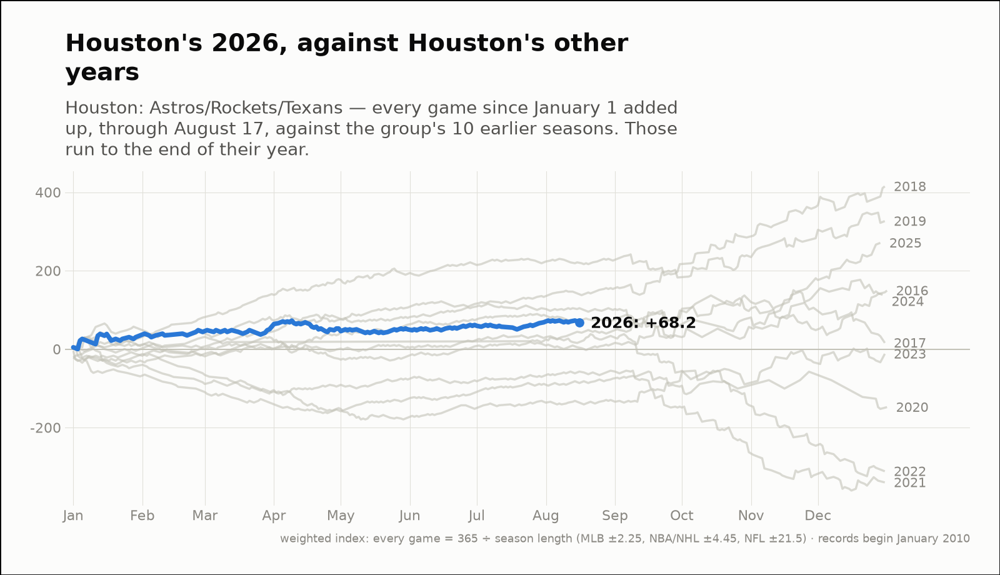
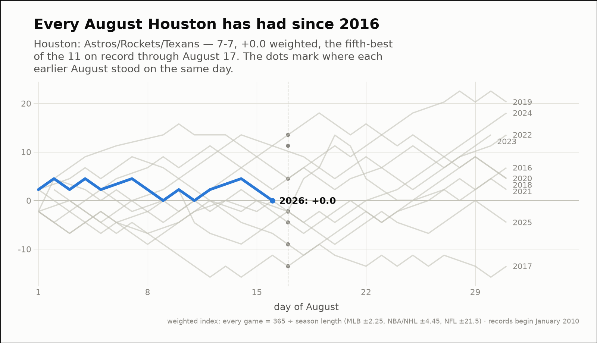
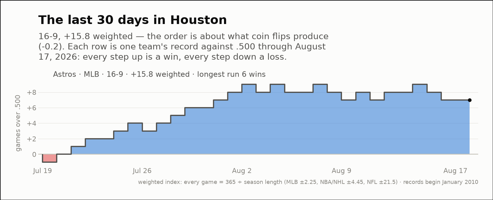

City of the day — Houston
Houston: Astros/Rockets/Texans
- 2026 so far
- 99-87, +68.2 weighted over 186 games; longest run 9 straight wins
- Order of results
- more alternating than chance (-2.1)
- Earlier seasons (full-year weighted)
- 2016 +149.2, 2017 +15.8, 2018 +414.9, 2019 +326.3, 2020 -148.1, 2021 -340.1, 2022 -311.7, 2023 -12.2, 2024 +138.2, 2025 +270.8
- Last 30 days
- 16-9, +15.8 weighted; longest run 6 straight wins
- Window opens
- July 19, 2026
- August 2026 through day 17
- 7-7, +0.0 weighted — the fifth-best of the 11 on record
- Same August in earlier years (same stretch)
- 2016 -9.0, 2017 -13.5, 2018 -2.2, 2019 +4.5, 2020 -2.2, 2021 -4.5, 2022 +4.5, 2023 +11.3, 2024 +13.5, 2025 -2.2
| Team | Last 30 days | Weighted | Longest run |
|---|---|---|---|
| Astros | 16-9 | +15.8 | 6 straight wins |


